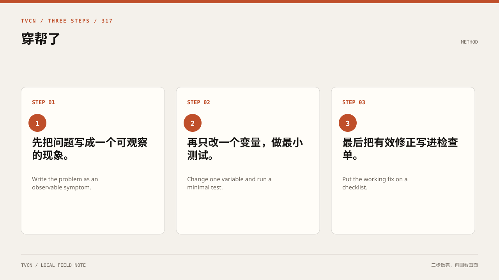

先查四类穿帮
- 道具：杯子位置、烟头长度、手机屏幕内容。每个镜头前后各拍一张道具位置照。
- 服装：领口、袖口、汗渍、纽扣。连续拍摄时让演员穿同一件，不要靠后期。
- 走位：人物从画面左边出，下一个镜头从右边进。用地标和站位胶带固定。
- 光线：窗外从白天变晚上，影子方向变了。先拍覆盖，再拍特写。
一个 1 分钟检查
每个机位切换前，让场记拍三张：全景、道具特写、演员手部。下一场开机前对照上一场的最后一张，再决定是否重拍。
什么时候不要补拍
如果穿帮在画面边缘且不影响信息，先用插入镜头或声音转移注意力；不要为一个杯子重拍整场。主角脸上的穿帮，必须重拍。
DIAGRAM / Method card
三步流程

现场
开机前拍现场照：桌面、手、衣服；收工前对一遍。
怎么做
- 每换一次机位或服装，拍一张全景和细节照。
- 指定一个人做连续性记录：道具位置、衣领、手表、饮料余量。
- 剪辑前按场次对照片，发现穿帮先补拍或换插入。
别踩
别凭记忆接戏；记忆只记得大体，记不住细节。
图片说明：本页封面、图解与步骤图是编辑示意或结构图，不是本页实测照片，也不能当作器材测试证据；AI 辅助生成的图会在图注标出。判断器材或画面，以正文的测试条件与现场记录为准。